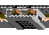
| Вид | Название | HP | Dmg | SL | MV | Sht | Cst | |
| 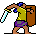 | Militia | 2 | 1-2 | 2 | 2 | - | 5 | Народное ополчение. Модернезированный вариант крестьян. |
| 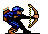 | Archer | 10 | 1-2 | 2 | 2 | 12 | 25 | Лучники. Стреляют довольно слабо, если сравнивать их с Orcs и Elves. Ценны лишь тем, что вообще могут стрелять. |
| 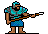 | Pikemen | 10 | 2-4 | 2 | 2 | - | 30 | Копейщики. Неплохие юниты среднего уровня. |
| 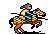 | Cavalry | 20 | 3-5 | 4 | 4 | - | 80 | Кавалерия. Быстро скачет, но 20 hp для 4 уровня явно недостаточно. |
| 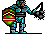 | Knight | 35 | 6-10 | 5 | 1 | - | 100 | Рыцари. Медленно передвигаются, т.к. мешает куча надетого железа; но если уж дойдут, то мало не покажется. |
| Вид | Название | HP | Dmg | SL | MV | Sht | Cst | |
| 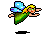 | Sprite | 1 | 1-2 | 1 | fly | - | 1 | Слабы как крестьяне, зато могут летать. Под умелым руководством могут быть весьма полезны. |
| 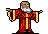 | Gnome | 5 | 1-3 | 2 | 1 | - | 6 | Слабы ударом и тихоходны. Зато дешевы, сердиты, и - много. |
| 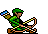 | Elf | 10 | 1-2 | 3 | 3 | 24 | 20 | Лучшие лучники в игре! |
| 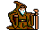 | Druid | 25 | 2-3/45 | 5 | 2 | 3 | 70 | Стреляет магией, всего три выстрела - но каких! Не действует на драконов. |
| 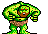 | troll | 50 | 2-5 | 4 | 1 | - | 100 | Толстые, неповоротливые и бьют несильно; зато живучи - в начале каждого раунда восстанавливает свои hp. |
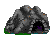
| Вид | Название | HP | Dmg | SL | MV | Sht | Cst | |
| 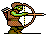 | Orc | 5 | 2-3 | 2 | 2 | 4 | 7 | Неплохие стрелки. Но сильно уступают Эльфам по количеству выстрелов. |
| Dwarf | 20 | 2-4 | 3 | 1 | - | 30 | Крепкие бородатые дядьки. Тихоходны. |
| 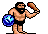 | Ogre | 40 | 3-5 | 4 | 1 | - | 75 | То же, что и Dwarves, только раза в два потолще и покруче. |
| 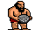 | Giant | 60 | 10-20 | 5 | 3 | 16 | 200 | Второй по силе монстр в игре, после драконов. Вдобавок еще и стреляет. Всерьез подумайте, прежде чем атаковать! |
| 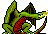 | Dragon | 200 | 25-50 | 6 | fly | - | 500 | Драконы - они и в KB драконы, с приставкой "мега". Иммунитет к магии, позволяют герою летать. |
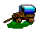
| Вид | Название | HP | Dmg | SL | MV | Sht | Cst | |
| 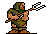 | Peasant | 1 | 1 | 1 | 1 | - | 1 | Крестьяне. Вспомните HMM, и вам все станет понятно на их счет. Интересно, почему в NWC так их не любят? |
| 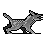 | Wolf | 3 | 1-3 | 2 | 3 | - | 4 | Быстро бегают и стоят недорого, деруться нелохо, но hp маловато. |
| 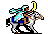 | Nomad | 15 | 3-4 | 3 | 2 | - | 30 | Степная кавалерия. Надежный и неплохой юнит. |
| 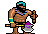 | Barbarian | 40 | 1-6 | 4 | 3 | - | 75 | Варвары. Не смотря на то, что пешие, бегают быстро. Сильны, но имеют большой разброс по наносимому ущербу. |
| 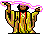 | Archmage | 25 | 2-3/50 | 5 | fly | 12 | 120 | Довольно сомнительный юнит 5 уровня, стреляет магией. Позволяет персонажу летать, не действует на драконов. |
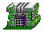
| Вид | Название | HP | Dmg | SL | MV | Sht | Cst | |
| 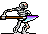 | Skeleton | 3 | 1-2 | 2 | 2 | - | 4 | Undead. Стандартная пехота некромантов. Параметры аналогичны рыцарской Militia. |
| 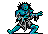 | Zombie | 5 | 2-2 | 2 | 1 | - | 5 | Undead. Лишь немного сильнее своего младшего "брата" - Скелета. |
| 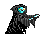 | Ghost | 10 | 3-4 | 4 | 3 | - | 40 | Undead. Все помнят HMM2 PoL? Здесь сделано поинтересней - они тоже прибавляют в числе по кол-ву убитых, но если они превысят после этого leadership, то вам будет плохо |
| 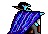 | Vampire | 30 | 3-6 | 5 | fly | - | 150 | Undead. Восстанавливается за счет врагов, если ранен. Летает сам и позволяет летать вашему герою. |
| 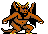 | Demon | 50 | 5-7 | 6 | fly | - | 300 | Не относится к мертвецам, летает и позволяет летать герою. Имеет шанс количественно ополовинить отряд врага. |
HP - Hit Points (кол-во жизни);
Dmg - Damage (наносимый урон);
SL - Strength Level (уровень силы);
MV - Movement (перемещение);
Sht - Shoots (Количество выстрелов);
Cst - Cost (недельное жалованье).
Существа с типом перемещения fly могут либо переместиться на одну клетку, либо переместиться в любое незанятое поле.
Dragons, Archmages, Vampires и Demons позволяют вашему герою летать, нажав клавишу "F". В армии не должно быть других отрядов.